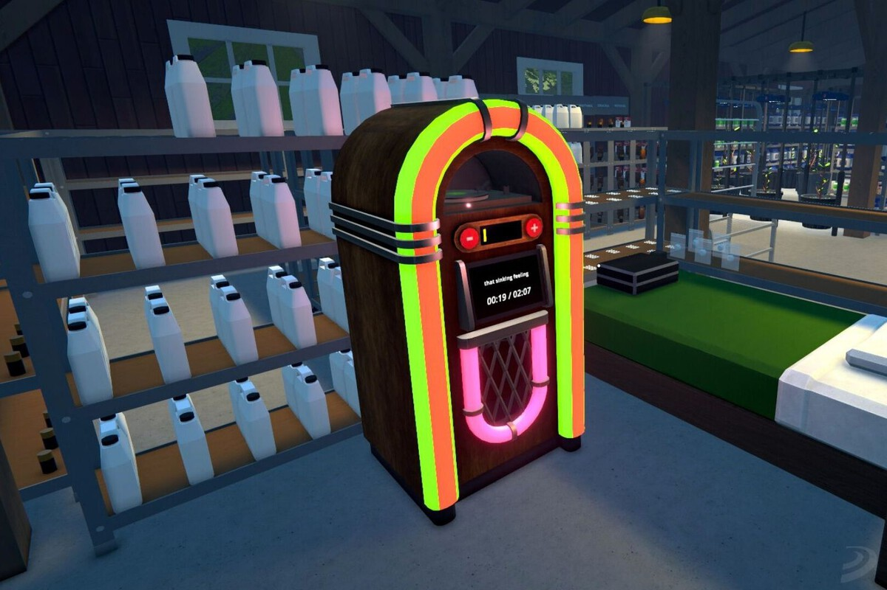

NOTICIAS
"Rockstar sorprende con el segundo tráiler de Grand Theft Auto VI"
Uno de los temas más discutidos es la inevitable comparación con el primer tráiler de GTA 6, que ostenta el récord histórico de 93 millones de vistas en un día para un video de estreno no musical. Aunque el segundo tráiler no superó esta cifra, sus 69 millones de vistas en 24 horas siguen siendo destacables, consolidándose como un éxito rotundo.
Fecha: Abril 2025
Leer más...La segunda actualización de Schedule 1 ya está disponible y esto es todo lo nuevo que trae la v0.3.5

Tras un mes aproximadamente desde la primera actualización de Schedule I, Tyler ha seguido desarrollando la segunda actualización de juego, versión que desde hoy tenemos disponible para descargar y probar. Es por ello, que en esta guía te contamos todas las novedades de la v0.3.5.
Fecha: Abril 2025
Leer más...